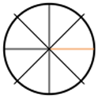

CALIBRATION
FlowOptimisez facilement vos procédés d'impression alternative.
Mire
Imprimez vos mires pour calibrer votre procédé.
Courbe
Analysez vos résultats et générez des courbes pour optimiser vos tirages.
Négatif
Transformez vos images en négatifs numériques optimisés.
Bibliothèque
Accédez à toutes vos mires, courbes et projets.
Étapes de calibration
Analyse de la mire
📸 Importez votre mire scannée
💡 Exemple de résultat attendu
Votre scan doit avoir ce type de contraste
Mode Pro – Repositionnez, zoomez et faites pivoter l'image scannée pour aligner précisément la partie qui vous intéresse. La courbe de correction est mise à jour lorsque vous relâchez l'interaction.